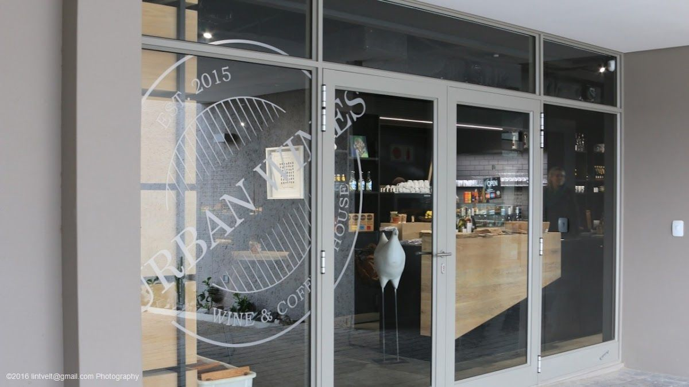
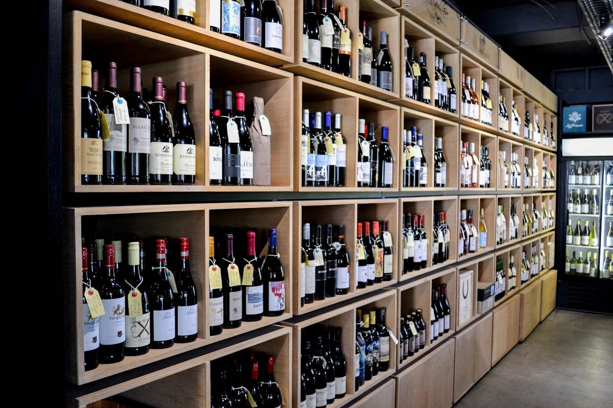
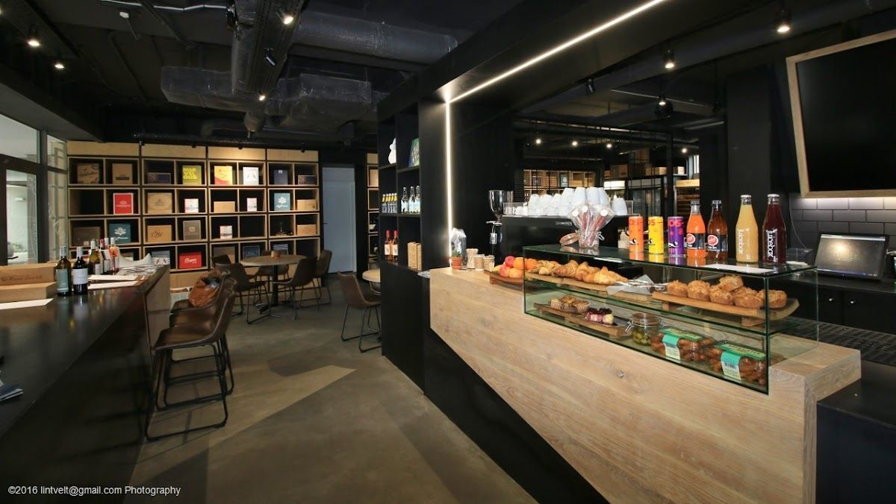
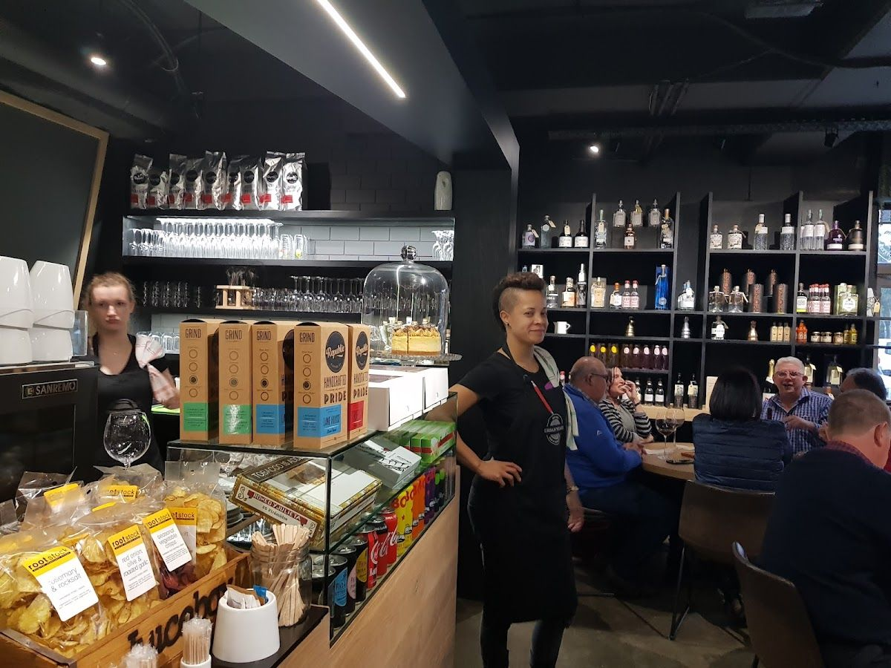

Immerse yourself in a world of exquisite wines and delightful dining experiences.
Get In TouchLocated in the heart of Durbanville, Urban Wines - Wine Store & Bistro is a haven for wine enthusiasts and food lovers. We offer an extensive selection of premium wines, sourced from both local vineyards and renowned international brands, ensuring every visit is a discovery of new flavors and experiences.
Our story began with a passion for exceptional wines and gourmet food. We take pride in creating an inviting atmosphere where guests can unwind, savor the finest wines, and enjoy our carefully crafted menu. Our bistro reflects our commitment to quality and our love for the local community we serve.
At Urban Wines - Wine Store & Bistro, we value authenticity, quality, and customer satisfaction. Our team is dedicated to providing personalized service, ensuring that every guest feels welcome and appreciated. Join us for a unique dining experience, where each visit is more than just a meal — it's a celebration of good taste and good company.
Explore our diverse offerings, crafted to delight your senses and satisfy your cravings. From dine-in experiences to convenient takeaway options, we cater to all your culinary desires.
Join us for an unforgettable dining experience, where exquisite wines meet gourmet dishes in a cozy and intimate setting. Our menu is designed to complement our wine selection, creating perfect pairings that elevate your dining adventure.
Enjoy our gourmet offerings in the comfort of your home with our convenient takeaway options. Whether you're planning a cozy night in or a festive gathering, our carefully curated menu ensures a delightful experience for every occasion.
Here is what our clients say about us.
"Urban wines is an absolute gem in Durbanville. I have been going there regularly for 3 years now, the atmosphere is intimate, the food is magnificent, the coffee spectacular and the wine selection is phenomenal. The staff are super friendly and the owner, Lisa is always welcoming and exceptionally helpful! Lisa and her staff make it feel like you are part of their family."— Leanne Hendrikz, ⭐⭐⭐⭐⭐
"Really such a special place with an incredible aura and an owner who is extremely friendly and helpful. Good place to have that informal business meeting or to just visit for good wines and great food, if you alone or with a friend you will fit in and enjoy yourself."— Tessa le Roux, ⭐⭐⭐⭐⭐
"URBAN WINES is a gorgeous wine shop and Bistro with a massive range of the finest wines, spirits, liquors & craft beers! Food quality is superb 👌. My favorites are the Truffle burger served with crispy sweet potato chips. BEST burger ever and the Truffle pizza! Out of this world divine. The owner, Lisa, is warm, friendly and welcoming welcoming welcoming. It's like a second home. 6 STARS 🌟"— Mandy Sykes-Robertson, ⭐⭐⭐⭐⭐
"Beautiful place, I'm Italian and seemed to be home. we went for the weekly tasting R50 for 3/4 wines. In the Facebook page she posts the wines of the weekly tasting. The owner was nice, she presented us the wines and talked to us, very welcoming. The service was good. The Tapas plate of Camembert and onions was very well done, delicious, fresh cooked."— Dalia Tine', ⭐⭐⭐⭐⭐




We'd love to hear from you — reach out to us anytime.